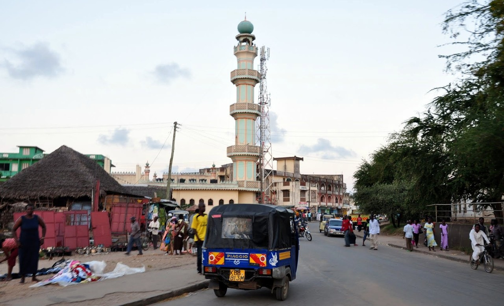
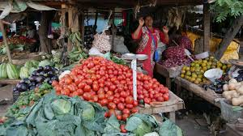
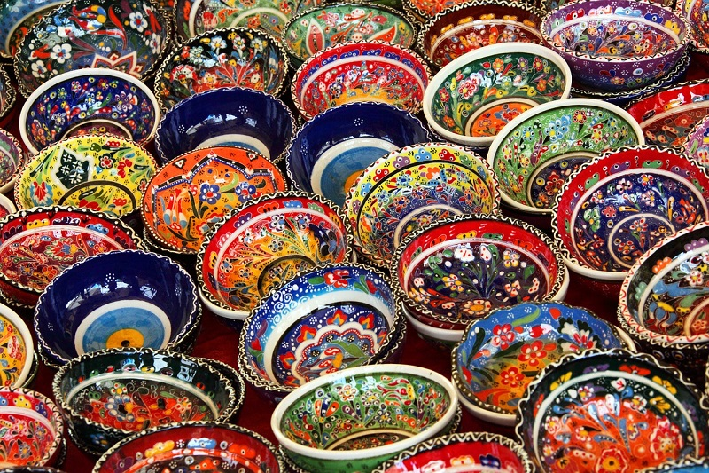
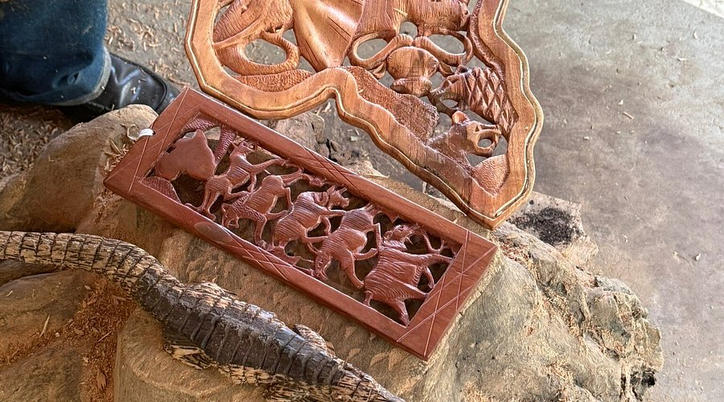

Esplora il cuore di Malindi tra cultura swahili, artigianato locale e atmosfere africane.




Escursione nella città di Malindi, conosciuta anche come
“Malindi Araba”.
Passeggiando tra le sue vivaci vie potrete scoprire sia la parte
moderna che quella storica della città, visitando il mercato locale,
i negozi di tessuti tradizionali, le spezie e l’artigianato tipico
della costa keniota.
L’escursione si conclude con la visita alla famosa
fabbrica del legno Akamba, dove sarà possibile osservare gli artigiani
al lavoro nella lavorazione del legno e acquistare souvenir fatti a mano.